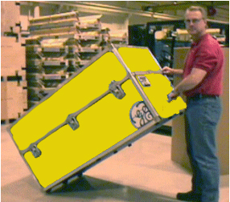
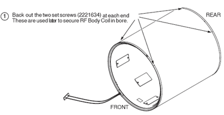
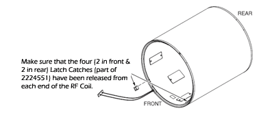
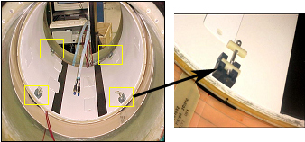
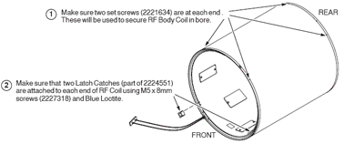
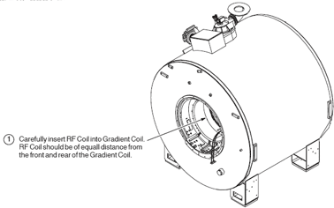
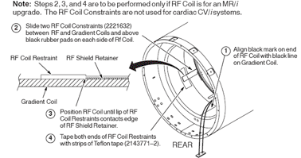

Operating Documentation
Direction 5133315-3, Rev# 14
Signa EXCITE HD 1.5T Service Methods
Module Version 4.0, Version Date 11/17/08
Operating Documentation |
| Required Persons | Preliminary Reqs | Procedure | Finalization |
|---|---|---|---|
| 2 | Not Applicable | 3 to 5 | Not Applicable |
The RF body coil cartridge is a Field Replaceable Unit (FRU) that mounts inside the gradient coil (also a FRU). It is available in 1.0T and 1.5T versions. If the RF coil fails, it must be removed from the gradient coil and replaced. Since the replacement procedures for the RF and gradient coils are closely related, references are made below to the epoxy-filled gradient coil replacement procedure where instructions for removal of similar parts (for example, the bridge) can be found. While a portion of the following procedure can be accomplished by one person (connecting/disconnecting various cables, etc.), replacing a failed RF body coil requires more than one person.
| Item | Qty | Effectivity | Part# | Manufacturer | |
|---|---|---|---|---|---|
| Non-Magnetic Tool Kit | 1 | - | 2385097 or 5112581 | - | |
| Personal Protection Equipment (PPE) | 1 | - | - | - | |
| Composed of : | |||||
| Gloves | 1 | - | - | - | |
| Safety Glasses | 1 | - | - | - | |
| Safety Shoes | 1 | - | - | - | |
| Long Sleeve Shirts and Pants | 1 | - | - | - | |
| Authorized Personnel Floor Sign | 1 | - | 2289812 | - | |
| Item | Qty | Effectivity | Part# | Manufacturer | |
|---|---|---|---|---|---|
| 1.5T Short Body RF Coil and Yellow Case | 1 | 1.5T systems | 2208999-3 | - | |
| Short RF Coil and Case | 1 | 1.0T systems | 2208999-2 | - | |
| ||||
| Strong Magnetic Field! | ||||
| Ferrous materials can become dangerous projectiles in the presence of the magnetic field Produced by the Signa Magnet. | ||||
| Do not Bring any ferromagnetic tools or equipment into the magnet room. |
| ||||
| Dangerous Work Area! | ||||
| Use of heavy equipment for coil removal and replacement presents hazards to all personnel in the area. | ||||
|
| Condition | Reference | Effectivity |
|---|---|---|
The following components must be removed prior to RF coil replacement: | Bridge | - |
- | Front End Bell | - |
- | Rear End Bell | - |
For steps prior to the actual RF Coil replacement for systems with a Cx or LCC magnet, refer to Failed Gradient Body Coil Removal. | - | - |
A new Cardiac RF body coil is packed in a shipping container (trunk) that is strapped to a pallet. Unstrap the shipping container from the pallet and remove the RF body coil from the trunk. (The process is reversed when preparing the defective RF body coil for return.)
See Illustration 1 through Illustration 3 to remove the replacement coil.
Illustration 1: Tilt RF Coil Case and Roll Off Pallet

Illustration 2: Move RF Coil Case to Final Location and Set Case Horizontally

Illustration 3: Open RF Coil Case and Remove New Coil

Remove the RF Body coil from the CRM without using the RF tracks, which are too thick to use. Use pieces of smooth, stiff material (sheets of film work well) to easily slide the RF coil out of the Gradient Coil. See Illustration 4 through Illustration 14 for removing and replacing the BRM-D RF Body Coil.
Illustration 4: Loosening BRM-D (Short) RF Body Coil Overview

Illustration 5: Loosening BRM-D (Short) RF Body Coil Detail

Illustration 6: Release the Latch Assembly

Illustration 7: Latch Assembly Detail

Illustration 8: Release the RF Constraints

| |||||||||
Illustration 9: Removing BRM-D (Short) RF Body Coil

Illustration 10: Installing BRM-D (Short) RF Body Coil

Illustration 11: Installing the BRM-D (Short ) RF Body Coil

Illustration 12: Positioning the BRM-D RF Body Coil

Illustration 13: Installing the RF Constraints (Additional Detail)

Illustration 14: Securing BRM-D (Short) RF Body Coil

Complete remaining installation steps per Gradient Coil Installation Procedure.
Return the failed RF coil to the shipping crate, reversing the steps used to remove the replacement coil in Unpacking BRM-D (Short) RF Body Coil.
Install all removed components.
Clean up the site in preparation for patient scans.
Perform TR Dynamic Disable Calibration.